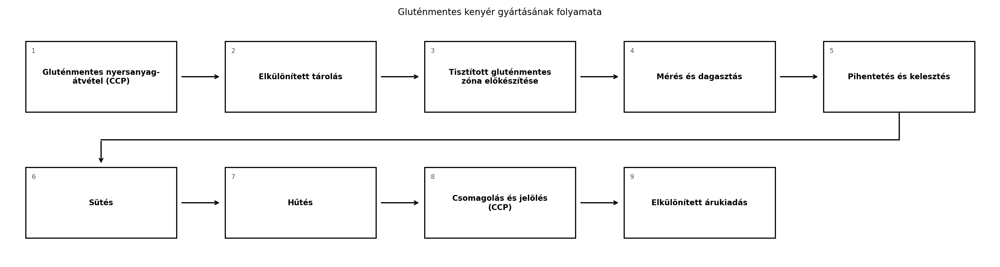

Egy pékségben délelőtt egy vásárló azzal keresi meg a pultost, hogy
gluténmentes kenyeret szeretne venni, mert cöliákiás. A pék tudja, hogy
a hagyományos búzakenyér glutént tartalmaz, ezért erre nem alkalmas; a
gluténmentes kenyér gluténtartalma legfeljebb 20 mg/kg lehet
(ellenőrizendő: 828/2014/EU), és a pult mögötti
szeletelőgépben, a közös sütőlemezen vagy a lisztporos levegőben bárhol
keresztszennyeződés történhet. Ha a termék a „gluténmentes” feliratot
viseli, de a gluténtartalom mégis meghaladja az előírt határértéket, az
nemcsak vásárlói panaszt, hanem hatósági intézkedést, termékvisszahívást
és súlyos egészségkárosodást is okozhat. Ugyanilyen felelősség a
csökkentett só- vagy cukortartalmú, valamint a cukorbetegeknek szánt
termékek jelölése: a péknek pontosan tudnia kell, mit jelent a „mentes”,
a „csökkentett” vagy a „cukormentes” állítás, és hogyan lehet ezeket
biztonságosan előállítani.
34.4.2 Szemléletes kép
Képzeljünk el egy kisméretű, elkerített sarkot a pékségben, ahol
piros színű eszközök, külön dagasztóteknő, saját sütőlemez és zárható
alapanyagszekrény van. A falon tábla: „Gluténmentes zóna – belépés csak
átöltözés és kézmosás után”. A gluténmentes lisztkeveréket zárt dobozban
tárolják, a nyersanyagok címkéjén laboratóriumi tanúsítvány száma
szerepel. A gyártás naponta első műszakban, a búzalisztes termelés előtt
történik; utána a területet nedves feltörléssel és validált
tisztítószerrel takarítják. Ez a kép mutatja, hogy a diétás és
gluténmentes termék nem csupán recept kérdése, hanem elkülönített
gyártási rendszeré.
Az alábbi alaprajz ugyanezt a sarkot mutatja felülnézetben: a belépés
és a kézmosó (1), a tábla (2), a zárható szekrény (3), a jelölt eszközök
(4), a külön dagasztóteknő (5) és a saját sütőlemezek (6) a fallal
elválasztott búzalisztes területtől (7) távol vannak. A folytonos nyíl
az anyag, a szaggatott a dolgozó útja.
Statikus változat (mint a PDF-ben)
A gluténmentes zóna alaprajza (sematikus rajz)
A térbeli elkülönítés mellett az időbeli is számít: a gluténmentes
gyártás a búzalisztes termelés előtt, az első műszakban folyik, utána
takarítanak. A fejezetben említett piros színkód az üzem saját szabálya;
a rajzon sraffozás jelöli. A HTML-kiadásban az elemek rámutatással
kiemelhetők, a nyilak és a búzalisztes terület rétegként ki-be
kapcsolhatók.
34.4.3 Definíciók és
alapfogalmak
Definíció.Diétás sütőipari termék
tágabb, mindennapi értelemben minden olyan pékáru, amelyet valamilyen
különleges táplálkozási igényhez igazítanak: gluténmentes, csökkentett
só-, cukor- vagy energiatartalmú, fehérjedús, rostban gazdag, tej- vagy
tojásmentes, illetve cukorbetegeknek ajánlott termék. Jogilag ma már a
„diétás” szó önmagában nem határoz meg zárt kategóriát; a termék
megnevezését a tényleges összetétel és az esetleges
tápanyag-összetételre vonatkozó állítás szabályozza.
Definíció.Gluténmentes élelmiszer
az az élelmiszer, amelynek gluténtartalma a fogyasztóhoz kerülő
késztermékben legfeljebb 20 mg/kg (20 ppm). Nagyon alacsony
gluténtartalmú élelmiszer az, amely legfeljebb 100 mg/kg
glutént tartalmaz, és a gluténmenteshez képest enyhébb, de szintén
ellenőrzött feltételekkel hozható forgalomba. (Ellenőrizendő:
828/2014/EU rendelet és a Codex Alimentarius vonatkozó szabványa
szerinti pontos határérték és jelölési forma.)
Definíció.Keresztszennyeződés a
nem szándékolt allergén- vagy gluténbekerülés egy mentesnek szánt
termékbe nyersanyagból, eszközről, felületről, levegőből vagy dolgozói
kézről. A gluténmentes gyártásban a keresztszennyeződés megelőzése az
elsődleges élelmiszer-biztonsági feladat.
Definíció.Hidrokolloid olyan,
vízben duzzadó, viszkózus gélt vagy oldatot képző anyag, amely a
gluténmentes tésztában részben pótolja a sikér hálózatképző szerepét.
Ilyen például a xantángumi, a guargumi, a hidroxi-propil-metil-cellulóz
(HPMC), a psyllium (útifűmaghéj) és a pektin. (Ellenőrizendő: az
adalékanyagok engedélyezett felhasználása az 1333/2008/EK rendelet
szerint.)
A diétás termékek csoportosítása sütőipari szempontból:
Gluténmentes termékek: búza, rozs, árpa és
hibridjeik helyett rizs, kukorica, köles, hajdina, cirok, tápióka,
burgonyakeményítő, valamint igazoltan gluténmentes zab felhasználásával
készülnek.
Csökkentett sótartalmú termékek: a hagyományos
változathoz képest legalább 25%-kal kevesebb sót tartalmaznak
(ellenőrizendő: 1924/2006/EK tápanyag-összetételre vonatkozó
állítások).
Csökkentett cukortartalmú termékek: a hagyományos
termékhez képest legalább 30%-kal kevesebb cukrot tartalmaznak
(ellenőrizendő).
Cukormentes termékek: legfeljebb 0,5 g cukrot
tartalmaznak 100 g termékben (ellenőrizendő).
Csökkentett energiatartalmú termékek: legalább
30%-kal kevesebb energiát tartalmaznak, mint az összehasonlítási alap
(ellenőrizendő).
Rostban gazdag termékek: legalább 6 g rost/100 g,
vagy legalább 3 g rost/100 kcal (ellenőrizendő).
Tej- és tojásmentes termékek: állati eredetű
összetevők nélkül, vegán igénnyel, de a keresztszennyeződés kockázata
itt is fennáll.
Szabály. A „mentes”, „csökkentett”, „magas”
tápanyag-összetételre vonatkozó állításokat csak akkor lehet
feltüntetni, ha a termék megfelel az adott állítás jogszabályban
rögzített feltételének. A „gluténmentes” jelöléshez a késztermék
gluténtartalmát laboratóriumi vizsgálattal rendszeresen ellenőrizni
kell, és a gyártási körülményekkel igazolni kell a keresztszennyeződés
kizárását.
34.4.4 Gluténmentes tészta
sajátosságai
A búzaliszt sikérje egy olyan rugalmas fehérjehálózat, amely a
dagasztás és a kelesztés során megtartja a szén-dioxid-gázt, ezáltal
laza, rugalmas bélzetet ad. A gluténmentes lisztekben ez a hálózat
hiányzik; a tészta ezért hígabb, ragacsosabb, nehezen formázható, és
hajlamos a kelesztés végén összeesni, a sütésben pedig tömör,
morzsalékony bélzetet adni.
Gyakorlati ok. A gluténmentes tésztában ezért szinte
mindig kombinálják a következőket:
Keményítőalap: rizsliszt, kukoricakeményítő,
tápiókakeményítő, burgonyakeményítő – ezek adnak szerkezetet, de
önmagukban száraz, morzsalékos terméket eredményeznek.
Fehérjeforrás: tojásfehérje, tejfehérje,
szójafehérje, borsófehérje – növeli a gázvisszatartást és a bélzet
rugalmasságát. Allergénként jelölni kell!
Hidrokolloid: xantán, guar, HPMC, psyllium – vizet
köt meg, gélt képez, és összetartja a tésztát, hasonlóan a
sikérhez.
Rost: útifűmaghéj, bambuszrost, almarost – javítja
a vízmegkötést, a frissességet és a bélszerkezetet.
Zsír és cukor: puhaságot, ízt adnak, de
befolyásolják a kelesztést.
Példa. Egy gluténmentes kenyér lisztkeveréke lehet:
40% rizsliszt, 30% kukoricakeményítő, 15% tápiókakeményítő, 10% barna
rizsliszt, 5% útifűmaghéj-por. Ehhez adnak 2% xantángumit, 2% cukrot,
1,5% sót, 3% olajat, 2% préselt élesztőt és kb. 80–95% vizet a keverékre
vetítve. A pontos vízmennyiség a keményítők vízfelvevő képességétől függ
(ellenőrizendő: gyártói technológiai lap, próbasütés).
A tészta jellemzői:
A dagasztás célja nem a sikér kialakítása, hanem az egyenletes
hidratáció és a hidrokolloidok gélesedésének elindítása.
A tészta inkább sűrű massza, mint rugalmas gombóc; formázható
kenyértésztát csak megfelelő hidrokolloid-rendszerrel kapunk.
A kelesztés gyorsabban is lejátszódhat, de a tészta gyengébb
szerkezete miatt a túlkelesztés hamar összeesést okoz.
A sütésnél a bélzet csak lassan szilárdul meg; ezért a gluténmentes
kenyereket gyakran formában sütik, és a sütési hőmérsékletet kissé
alacsonyabbra, az időt hosszabbra veszik.
A késztermék maghőmérséklete legalább 96–98 °C legyen a biztonságos
átsültséghez (ellenőrizendő: üzemi technológiai lap; ez tanulási
példa).
34.4.5 Elkülönített gyártás,
tisztítás, igazolás
A gluténmentes termékek előállításának alapelve: a gluténtartalmú
nyersanyagokkal való érintkezést a lehető legkisebbre kell csökkenteni,
és az eredményt ellenőrizhetővé kell tenni. Ez a gyakorlatban a
következőket jelenti:
Elkülönített tárolás: a gluténmentes liszteket,
keverékeket, magvakat zárt, jól címkézett edényben vagy külön polcon
tárolják, soha nem a búzalisztek mellett nyitott zsákban.
Elkülönített mérés és előkészítés: külön mérleg,
kanál, szita, edény használata; a gluténmentes anyagokat nem ugyanazon
az asztalon mérik, ahol korábban búzaliszt volt, hacsak azt előtte
validáltan le nem tisztították.
Elkülönített gyártási zóna vagy időablak: lehetőleg
külön helyiség, elkerített sarok, vagy a napi gyártás első műszakja,
amikor a levegőben még nincs búzalisztpor. A gluténmentes termelés után
a területet és az eszközöket alaposan, validált módszerrel
tisztítják.
Saját eszközök: forma, sütőlemez, kelesztőkosár,
kés, sütőlapát, szeletelőgép vagy annak külön kése. Ha ugyanazt a
kemencét használják, a gluténmentes terméket fedett vagy elkülönített
kamrában sütik, és a sütőlemezt előtte tisztítják.
Dolgozói higiénia: a gluténmentes zónában dolgozó
munkatárs tiszta köpenyt, hajhálót visel, kezet mos, és nem érintett
korábban gluténtartalmú tésztát. A gluténmentes gyártás előtt nem szabad
búzaliszttel dolgozni ugyanabban a ruhában.
Tisztítási validálás: a tisztítási eljárást egyszer
tanúsítani kell, például felületi mintavétellel vagy
glutén-tesztpálcával, hogy igazolható legyen: az adott tisztítási lépés
után a felületeken nincs kimutatható gluténmaradék.
Igazolás: a késztermékből rendszeres időközönként
laboratóriumi gluténvizsgálatot kell végezni, és az eredményt
dokumentálni. A vizsgálati gyakoriságot a HACCP-terv és a
kockázatértékelés határozza meg (ellenőrizendő: a pékség HACCP-terve,
hatósági útmutató).
HACCP. A gluténmentes gyártás legfontosabb kritikus
szabályozási pontjai (CCP) tanulási példaként:
CCP 1 – Nyersanyag-átvétel: minden gluténmentes
alapanyagnak rendelkeznie kell gluténmentességi tanúsítvánnyal vagy
specifikációval. Határ: gluténtartalom ≤20 mg/kg (ellenőrizendő).
Monitoring: szállítólevél és tanúsítvány ellenőrzése. Helyesbítés: nem
megfelelő tétel visszautasítása.
CCP 2 – Keresztszennyeződés-megelőzés a gyártásban:
a gluténmentes zóna és eszközök gluténmentes állapota. Határ:
gluténmentes felület, nincs látható lisztszennyezés, a tisztítási
validálás szerint. Monitoring: vizuális ellenőrzés, időszakos felületi
gluténteszt. Helyesbítés: újbóli tisztítás, a gyártás leállítása a hiba
megszüntetéséig.
CCP 3 – Csomagolás és jelölés: a késztermék
megfelelő jelölést kap, és nem érintkezhet gluténtartalmú termékkel.
Határ: a csomagoláson a „gluténmentes” jelölés csak akkor szerepelhet,
ha a tétel gluténtartalma ≤20 mg/kg (ellenőrizendő). Monitoring:
tételazonosság ellenőrzése, jelölés ellenőrzése. Helyesbítés: hibásan
jelölt tétel visszatartása, átcímkézés, szükség esetén
megsemmisítés.
CCP 4 – Sütés: a bél maghőmérséklete legalább 96 °C
(tanulási érték, ellenőrizendő: üzemi technológiai lap). Monitoring:
kalibrált maghőmérővel minden tételnél. Helyesbítés: visszasütés vagy a
tétel elkülönítése.
Allergén. A gluténmentes termékek nem feltétlenül
mentesek más allergénektől: a felhasznált fehérjeforrás lehet tojás,
tej, szója, csillagfürt. A diétás termékeknél is fel kell tüntetni
minden allergén összetevőt. A gluténmentes termékek esetében a
keresztszennyeződés vizsgálatakor a glutén mellett a többi allergénre is
figyelni kell. A „gluténmentes” jelölés nem helyettesíti az allergénekre
vonatkozó kiemelést.
34.4.6 Csökkentett só-, cukor- és
szénhidráttartalom
A só, a cukor és a szénhidrátok csökkentése technológiai kihívást
jelent, mert ezek az összetevők nemcsak ízt adnak, hanem befolyásolják a
tészta reológiáját, az élesztő működését, a barnulást és a
frissességet.
Só. A só csökkentése:
csökkenti a tészta stabilitását, mert a só a sikér erősítője; ezért
kismértékű sócsökkentésnél is figyelni kell a dagasztásra és a
kelesztésre;
gyorsítja az élesztő működését, ami túlkelesztéshez vezethet;
ilyenkor a tésztahőmérséklet csökkentése vagy a kelesztési idő
rövidítése segít;
rontja az ízt, ezért fűszerekkel, kovásszal, magvakkal lehet
kompenzálni;
a „csökkentett sótartalom” állítás feltétele: a termék legalább
25%-kal kevesebb sót tartalmazzon, mint egy összehasonlítható
hagyományos termék (ellenőrizendő: 1924/2006/EK rendelet).
Cukor. A cukor csökkentése:
csökkenti az élesztő számára gyorsan felvehető tápanyagot, ezért
lassabb lehet a kelés; szükség lehet hosszabb kelesztésre vagy enyhe
cukorpótlásra;
világosabb héj, gyengébb Maillard-reakció, ezért a sütési
hőmérsékletet kissé emelni kell vagy a gőzölésen változtatni;
rövidíti a frissességet, mert a cukor nedvességmegkötő; ezt
rostokkal, invertcukorral vagy poliolokkal lehet részben pótolni;
a „csökkentett cukortartalom” állítás feltétele: legalább 30%-kal
kevesebb cukor, mint az összehasonlítási alap; a „cukormentes” feltétele
legfeljebb 0,5 g cukor/100 g (ellenőrizendő).
Szénhidrát. A szénhidrát csökkentése általában a
keményítő és a cukor együttes csökkentését jelenti:
a búzaliszt egy részét alacsony szénhidráttartalmú anyagokkal
helyettesítik: mandulaliszt, kókuszliszt, lenmagliszt, bambuszrost,
fehérjekoncentrátumok, psyllium;
ezek az anyagok erősen eltérő vízfelvevő képességgel rendelkeznek,
ezért a receptúrát próbasütéssel kell beállítani;
a tészta szerkezete gyengül, a termék tömörebb lehet; a térfogat
megtartásához hidrokolloidok, tojásfehérje vagy sikérpótló adalékok
szükségesek;
a „csökkentett szénhidráttartalom” állítás pontos feltételeit az
adott jogszabály szerint kell ellenőrizni (ellenőrizendő: 1924/2006/EK
rendelet és a kapcsolódó bizottsági útmutató).
Fontos. A cukorbetegeknek szánt termékek esetében a
„diabetikus”, „cukorbetegeknek ajánlott” kifejezések használata ma már
korlátozott. A legtöbb cukorbeteg számára a lényeg a szénhidráttartalom
és a glikémiás index, ezért helyesebb a tápértékjelölés pontos
feltüntetése és az orvosi/dietetikusi tájékoztatásra utalás. A terméken
ne állítsuk, hogy gyógyít vagy megelőz betegséget, mert ez tilos
egészségre vonatkozó állítás.
34.4.7 Gyakorlati útmutató:
gluténmentes kenyér készítése elkülönített zónában
Cél. Egy 500 g-os gluténmentes kenyér készítése a
pékség elkülönített gluténmentes sarkában, keresztszennyeződés
nélkül.
Eszközök és anyagok.
Gluténmentes lisztkeverék (pl. rizsliszt, kukoricakeményítő,
tápiókakeményítő, burgonyakeményítő)
Útifűmaghéj-por (psyllium) és xantángumi (vagy más engedélyezett
hidrokolloid)
Préselt élesztő, cukor, só, növényi olaj, langyos víz
Külön, piros jelölésű keverőtál, mérleg, kanál, kelesztőforma,
sütőlemez, hőmérő
Gluténmentes zóna: elkerített munkafelület, saját mosogató, tiszta
ruházat
Higiénia. A gluténmentes gyártás előtt a dolgozó
tiszta, elkülönített köpenyt és hajhálót vesz fel, kezet mos, ékszert
nem visel. A munkafelületet előzőleg nedves, tiszta ruhával áttörli,
majd a validált tisztítószerrel fertőtleníti. A kezet a gluténmentes
zónába lépés után újra meg kell mosni. A búzalisztes munkaterületről
érkező eszközt a gluténmentes zónába bevinni tilos, hacsak azt előtte
nem tisztították meg a validált eljárás szerint.
Gépbiztonság. Ha a dagasztáshoz kisméretű
keverőgépet használnak, a gépet csak betanított dolgozó kezelheti, a
védőburkolat lezárt állapotában. A tészta beragadásakor a gépet le kell
állítani, áramtalanítani kell, és meg kell várni, amíg a forgó rész
teljesen megáll. Tisztítani csak áramtalanított gépen szabad.
Lépések.
Mérés. A gluténmentes lisztkeveréket és az összes
száraz anyagot a gluténmentes zónában, a külön mérlegen mérjük ki. A
tálat előtte ellenőrizzük, hogy tiszta és gluténmentes legyen.
Élesztő feloldása. A langyos vízhez (28–30 °C)
hozzáadjuk az élesztőt és a cukrot, 5–8 percig állni hagyjuk. Ez alatt
az élesztő aktiválódik. Az élesztőoldatot a gluténmentes zónában
készítjük.
Száraz keverék. A lisztkeverékhez keverjük az
útifűmaghéj-port, a xantángumit és a sót, majd szárazon alaposan
elkeverjük.
Dagasztás. A száraz keverékhez öntjük az
élesztőoldatot és az olajat. Keverőgéppel alacsony fokozaton 2–3 percig,
majd közepes fokozaton 3–4 percig dagasztjuk, amíg egynemű, ragacsos
masszát kapunk. Cél: teljes hidratáció, nem rugalmas tészta.
Pihentetés. A tésztát a formában 10–15 percig
pihentetjük, hogy a hidrokolloidok megduzzadjanak.
Kelesztés. A formát 30–32 °C-os, 75–80% relatív
páratartalmú kelesztőbe helyezzük. A kelesztési idő 35–50 perc. A tészta
akkor kelt meg, amikor a forma kétharmadáig emelkedett, nem a tetejéig;
a gluténmentes tészta sütés közben tovább emelkedik.
Sütés. A kemencét előmelegítjük 210–220 °C-ra. A
formát sütőlemezre helyezzük, és 35–45 percig sütjük. Az első 10 percben
gőzt adunk, hogy a héj ne száradjon túl korán. A kenyér akkor jó, ha a
maghőmérséklete eléri a 96–98 °C-ot (ellenőrizendő: üzemi technológiai
lap).
Hűtés. A kenyeret a formából kiborítjuk, és rácsra
téve szobahőmérsékleten hűtjük legalább 1,5–2 órán át. A gluténmentes
kenyér melegen morzsalékos; a felszeleteléshez teljesen ki kell
hűlnie.
Ellenőrzési pontok.
A lisztkeverék címkéjén szerepeljen a gluténmentes tanúsítvány
jele.
A mérésnél minden tétel a gluténmentes zónában történjen.
A kelesztés után a tészta felülete ne legyen repedezett vagy
összeesett; a forma oldalától elválva, de még rugalmas legyen.
A sütés után a bélzet átsült, nem ragacsos; a maghőmérséklet a fenti
érték.
A készterméket a gluténmentes polcon, zárt csomagolásban tároljuk,
elválasztva a gluténtartalmú termékektől.
Dokumentálás. A gyártási naplóban rögzíteni kell: a
felhasznált gluténmentes alapanyagok tételszámát, a tisztítási validálás
dátumát, a kelesztési és sütési paramétereket, a maghőmérsékletet, és a
késztermék tételazonosítóját. A gluténmentes tételből mintát kell
tartani a nyomonkövethetőséghez.
2. Receptúra-táblázat. A lisztre vetített százalék
alapja a gluténmentes lisztkeverék = 100%. A mennyiségek 10 db-ra, a
tészta össztömege 6,08 kg (feladási tömeg kb. 600 g/db; tanulási
példa).
TA = 185 (keverék + víz); tésztahozam 202,5 kg/100 kg keverék.
Dagasztás: keverőgép, alacsony fokozat 3 perc, közepes fokozat 4
perc; tésztahőmérséklet 26–28 °C.
Pihentetés: 10–15 perc formában, szobahőmérsékleten.
Kelesztés: 30–32 °C, 75–80% relatív páratartalom, 35–50 perc.
Vetés: a formát sütőlemezre helyezve; a sütőlemez gluténmentes,
előzőleg tisztított.
Sütés: 210–220 °C, gőz az első 5–10 percben, sütési idő 40–45 perc,
maghőmérséklet 96–98 °C (ellenőrizendő).
Hűtés: kiborítás után rácson, legalább 1,5–2 óra.
4. Allergének. A termék a 828/2014/EU szerinti
feltételek (≤ 20 mg/kg, laboratóriumi igazolás) teljesülése esetén
jelölhető gluténmentesnek (ellenőrizendő), de a felhasznált lisztkeverék
tartalmazhat szóját vagy tejfehérjét (ellenőrizendő a gyártói
specifikációt). A jelen alapreceptben nincs tojás, tej, szója, dióféle,
szezám. A gyártás során a keresztszennyeződést a gluténmentes zóna
biztosítja. Allergén megjegyzés: a „gluténmentes”
jelölés ellenére a termék nem feltétlenül mentes más allergénektől; a
pontos allergénlistát a receptúra és a nyersanyag-specifikáció alapján
kell ellenőrizni.
5. HACCP- és minőségi pontok.
CCP: gluténmentes nyersanyagok átvétele; a gluténmentes zónába csak
tanúsított anyag kerülhet.
CCP: csomagolásnál a gluténmentes jelölés és a tétel egyezése; a
zárt csomagolás megakadályozza a későbbi szennyeződést.
CCP: sütés – a bél maghőmérséklete legalább 96 °C (tanulási érték,
ellenőrizendő), mérés minden tételnél; helyesbítés: visszasütés vagy
elkülönítés.
Minőségi ellenőrzés: a kenyér tömege 500 g ± tűrés (ellenőrizendő: a
pékség előírása, Élelmiszerkönyv), a héj egyenletesen barna, a bélzet
átsült, nem ragacsos, a vágásfelület nem morzsalékos túlságosan.
34.4.9 Minőségellenőrzés
A gluténmentes kenyér minőségi jellemzői:
Tömeg és térfogat: a kenyér tömege a feladási
tömegnek megfelelő; a fajlagos térfogat kisebb lehet, mint a
búzakenyéré, de a forma kitöltött legyen, nagy üreg nélkül.
Héj: egyenletes, aranybarna, nem repedezett szét,
nem sápadt.
Bélzet: egyenletes, kisebb pórusú, rugalmas, nem
nyúlós, nem ragacsos, nem morzsalékoló. A gluténmentes kenyér hajlamos a
szárazságra, ezért a nedvességtartalom és a frissesség fontos.
Íz: enyhén savanykás vagy semleges, nem keserű, nem
élesztőízű.
Jelölés: a csomagoláson a „gluténmentes” állítás,
az allergének kiemelve, a tápértékjelölés.
34.4.10 Tipikus hibák
Keresztszennyeződés a közös eszközön. A pék
ugyanazt a sütőlemezt használja, amelyen korábban búzalisztes zsemle
sült, és csak száraz ruhával törli le. A láthatatlan lisztszemcsék
glutént visznek a gluténmentes termékre. Helyes: külön, jelölt sütőlemez
vagy validált nedves tisztítás, és a gluténmentes termék sütése előbb
történjen.
A gluténmentes tészta összeesik kelesztés vagy sütés
közben. Ok: túlkelesztés vagy túl sok víz, esetleg a
hidrokolloid adagja kevés. Javítás: rövidebb kelesztés, pontos vízadag,
a hidrokolloid mennyiségének próbasütéssel való beállítása.
A kenyér belseje sütés után ragacsos, tömör. Ok:
nem sült át, túl alacsony volt a sütési hőmérséklet, vagy túl sok víz.
Javítás: maghőmérséklet ellenőrzése, hosszabb sütés, víz
csökkentése.
A „csökkentett sótartalmú” kenyér túlkelt és
íztelen. Ok: a kevesebb só miatt az élesztő gyorsabban
dolgozik, és az íz is gyengébb. Javítás: alacsonyabb tésztahőmérséklet,
rövidebb kelesztés, kovász vagy fűszerek használata.
A „gluténmentes” jelölésű termék a csomagolásban a
gluténtartalmú pult mellé kerül. A vásárló a közös fogóval
vehet ki gluténtartalmú zsemlét is, ami keresztszennyeződést okoz.
Helyes: a gluténmentes termékeket elkülönített, zárt pultban vagy
csomagolva, kizárólag saját, jelölt csipesszel (közös fogó nélkül) kell
árusítani, és a személyzetet ki kell képezni.
34.4.11 Önellenőrzés
Válaszold meg röviden, majd nézd meg a megoldásokat.
Igaz-e, hogy a „gluténmentes” kenyér gluténtartalma legfeljebb 100
mg/kg lehet?
Mi a szerepe a xantánguminak a gluténmentes tésztában?
Sorolj fel három intézkedést, amely a gluténmentes gyártás
keresztszennyeződését csökkenti.
Mi a különbség a „csökkentett cukortartalmú” és a „cukormentes”
termék között?
Miért kell a gluténmentes kenyérnek maghőmérsékletet mérni?
Hol van a gluténmentes gyártás lehetséges CCP pontja a fenti
technológiai lap szerint?
34.4.12 Feladatok
1. feladat (A) Definiáld a gluténmentes élelmiszert
és a keresztszennyeződést. Miért fontos megkülönböztetni a
„gluténmentes” és a „nagyon alacsony gluténtartalmú” jelölést?
2. feladat (A) Sorold fel a gluténmentes tészta
legfontosabb összetevő-csoportjait, és mindegyikre írj egy példát.
3. feladat (B) Egy gluténmentes kenyér
receptúrájában a gluténmentes lisztkeverék 100%, víz 90%,
útifűmaghéj-por 5%, xantángumi 2%, élesztő 3%, cukor 2%, só 1,5%, olaj
4%. Számítsd ki, hogy 12 kg gluténmentes lisztkeverékhez mennyi vizet,
útifűmaghéj-port, xantángumit és sót kell bemérni.
4. feladat (B) Egy pékség „csökkentett sótartalmú”
kenyeret szeretne forgalmazni. A hagyományos kenyér sótartalma 1,8 g/100
g. Mennyi lehet a csökkentett sótartalmú kenyér sótartalma maximum, ha
az állítás feltétele legalább 25%-os csökkentés? Ellenőrizd a számítást
mértékegységgel.
5. feladat (C) Egy gluténmentes kenyér sütésekor a
bélzet sütés után összeesik, ragacsos. Elemezd a lehetséges okokat, és
adj javítási tervet. Milyen méréssel ellenőriznéd az átsültséget?
6. feladat (D) Tervezz egy gluténmentes zónát egy
kis pékségben. Írd le a munkafolyamatot a nyersanyag-átvételtől a
késztermék csomagolásáig, jelöld a HACCP-pontokat és az
allergén-megelőzési lépéseket. Rajzolj egyszerű folyamatábrát az
elképzelt folyamatról.
34.4.13 Megoldások
34.4.13.1 Önellenőrzés –
válaszok
Hamis. A gluténmentes élelmiszer gluténtartalma legfeljebb 20 mg/kg.
A 100 mg/kg a nagyon alacsony gluténtartalmú termék határa
(ellenőrizendő).
A xantángumi hidrokolloidként vizet köt meg, gélt képez, és ezzel
részben pótolja a sikér hálózatképző szerepét: megtartja a gázt, javítja
a tészta összetartását és a bélzet rugalmasságát.
Elkülönített tárolás és mérés; külön eszközök és sütőlemezek; a
gluténmentes termelés időben elkülönítve (pl. első műszakban) vagy külön
zónában; a dolgozói higiénia és tisztítási validálás; rendszeres
laboratóriumi gluténvizsgálat.
A „csökkentett cukortartalmú” termék legalább 30%-kal kevesebb
cukrot tartalmaz, mint az összehasonlítási alap; a „cukormentes” termék
legfeljebb 0,5 g cukrot tartalmaz 100 g termékben (ellenőrizendő).
A maghőmérséklet mérésével lehet igazolni, hogy a bélzet átsült. A
gluténmentes kenyérnél a keményítő és a hidrokolloidok csak megfelelő
hőmérsékleten (kb. 96–98 °C) gélesednek és szilárdulnak meg.
A lehetséges CCP-k: nyersanyag-átvétel (gluténmentes tanúsítvány),
csomagolás és jelölés (tételazonosság, gluténmentes címke), a
keresztszennyeződés megelőzése a gyártási környezetben (validált
tisztítás), valamint a sütés (bél maghőmérséklete legalább 96 °C).
34.4.13.2 Feladatok megoldása
1. feladat (A). A gluténmentes élelmiszer
gluténtartalma legfeljebb 20 mg/kg; a keresztszennyeződés allergén vagy
glutén nem szándékolt bekerülése egy mentes termékbe. A két jelölés
azért fontos, mert eltérő határértékhez kötött: a gluténmentes szigorúbb
(≤20 mg/kg), a nagyon alacsony gluténtartalmú legfeljebb 100 mg/kg
lehet, és más fogyasztói kört érinthet. A címkén a pontos állításnak
megfelelően kell jelölni.
3. feladat (B). Adott: lisztkeverék = 100% = 12 kg.
A víz 90% →
.
Az útifűmaghéj-por 5% →
.
A xantángumi 2% →
.
A só 1,5% →
.
Ellenőrzés: a százalékok összege 100+90+5+2+3+2+1,5+4=207,5%, a
mennyiségek összege: 12+10,8+0,6+0,24+0,36+0,24+0,18+0,48 = 24,9 kg; ez
megfelel a 207,5%-nak.
4. feladat (B). A hagyományos sótartalom 1,8 g/100
g. A csökkentett sótartalmú termék sótartalma maximum
.
Ellenőrzés: a csökkentés
,
ami a
.
5. feladat (C). Tünet: a gluténmentes kenyér bélzete
sütés után összeesik, ragacsos. Lehetséges okok: túl sok víz a
tésztában; a hidrokolloid (xantán, psyllium) adagja kevés; túlkelesztés;
túl alacsony sütési hőmérséklet vagy rövid sütési idő; a maghőmérséklet
nem érte el a 96–98 °C-ot. Ellenőrzés: mérd meg a kenyér
maghőmérsékletét sütés után; ha 96 °C alatt van, süsd tovább, vagy emeld
a kemencehőmérsékletet. Ellenőrizd a receptúra vízfelvételét
próbasütéssel, és csökkentsd a vizet 5–10%-kal. Rövidebb kelesztési időt
alkalmazz, és ne hagyd túlkelni. Javítás: a következő tételnél módosítsd
a paramétereket, és minden tételnél mérd a maghőmérsékletet.
6. feladat (D). A folyamatábra (szöveges):

Gluténmentes kenyér gyártásának folyamata
- Tanulási példa; a CCP-k a nyersanyag-átvétel, a
keresztszennyeződés-megelőzés és a csomagolás-jelölés.
A folyamat során a CCP-k: nyersanyag-átvétel (tanúsítvány
ellenőrzése), keresztszennyeződés-megelőzés a gyártási zónában
(tisztítási validálás, vizuális ellenőrzés, felületi teszt), csomagolás
és jelölés (tételazonosság, gluténmentes címke). Allergén-megelőzés:
minden allergén összetevőt fel kell tüntetni; a gluténmentes zónában nem
használhatók gluténtartalmú anyagok.
34.4.14 Rövid összefoglaló
A diétás és allergénmentes sütőipari termékek gyártása az
élelmiszer-biztonság és a fogyasztói tájékoztatás kiemelt területe. A
gluténmentes termékeknél a késztermék gluténtartalma legfeljebb 20 mg/kg
lehet; a nagyon alacsony gluténtartalmú terméké legfeljebb 100 mg/kg
(ellenőrizendő). A gluténmentes tésztában a sikér hiányát
keményítőalappal, fehérjeforrással, hidrokolloidokkal (xantán, psyllium)
és rostokkal pótoljuk; a tészta hígabb, rövidebb kelesztést és hosszabb,
alacsonyabb hőmérsékletű sütést igényel, a maghőmérséklet 96–98 °C
legyen. Az elkülönített gyártás feltétele: külön tárolás, mérés,
eszközök, zóna vagy időablak, validált tisztítás és rendszeres
laboratóriumi gluténvizsgálat. A csökkentett só-, cukor- és
szénhidráttartalmú termékeknél az állítások jogszabályi feltételekhez
kötöttek: a csökkentett só legalább 25%-kal kevesebb, a csökkentett
cukor legalább 30%-kal kevesebb, a cukormentes ≤0,5 g/100 g
(ellenőrizendő). A technológiai módosítások (kevesebb só → gyorsabb
kelés; kevesebb cukor → világosabb héj, rövidebb frissesség) próbasütést
és gondos dokumentálást igényelnek. Továbbvitt
eredmény. Az itt bemutatott allergén- és gluténmentes gyártási
elvek, a keresztszennyeződés-megelőzés és a tápanyag-összetételre
vonatkozó állítások ismerete közvetlenül alkalmazandó a Hagyományos (HÍR) és korszerű (öko, bio) sütőipari
termékek alfejezetben, ahol a hagyományos és ökológiai termékek
jelölési és gyártási követelményeit tárgyaljuk.
34.4.15 Források és ellenőrzési
hiányok
828/2014/EU rendelet: a gluténmentes és nagyon alacsony
gluténtartalmú élelmiszerek pontos határértékei és jelölési feltételei –
kiadás előtt ellenőrizendő.
1924/2006/EK rendelet: a tápanyag-összetételre vonatkozó állítások
(csökkentett só-, cukor-, energiatartalom; cukormentes) pontos
feltételei – kiadás előtt ellenőrizendő.
1333/2008/EK rendelet: a hidrokolloidok és egyéb adalékanyagok
engedélyezett felhasználása.
A NÉBIH gluténmentes jelölésre és allergénkezelésre vonatkozó
útmutatói – kiadás előtt ellenőrizendő.
A gluténmentes lisztkeverékek gyártói specifikációi és a pékség
HACCP-terve: a konkrét vízfelvétel, sütési paraméterek és vizsgálati
gyakoriság üzemenként eltér, ezért tanulási példaként kezelendő.